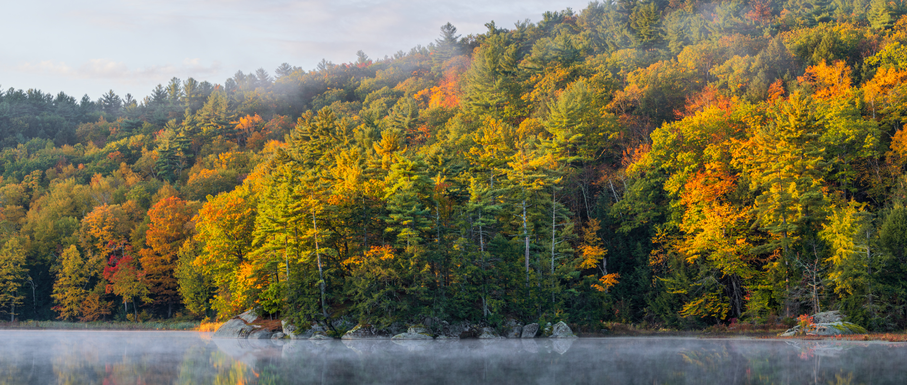
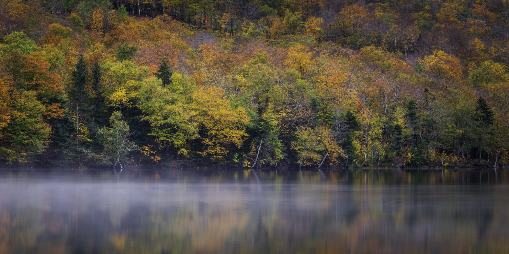
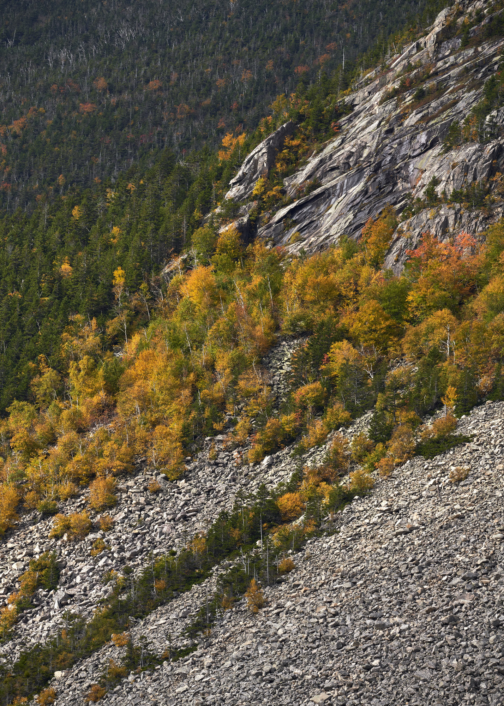
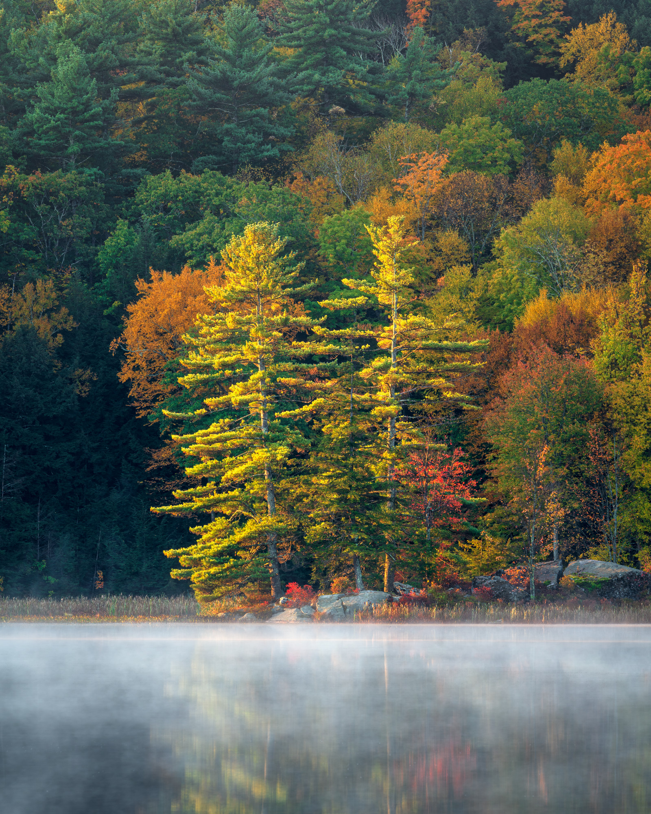
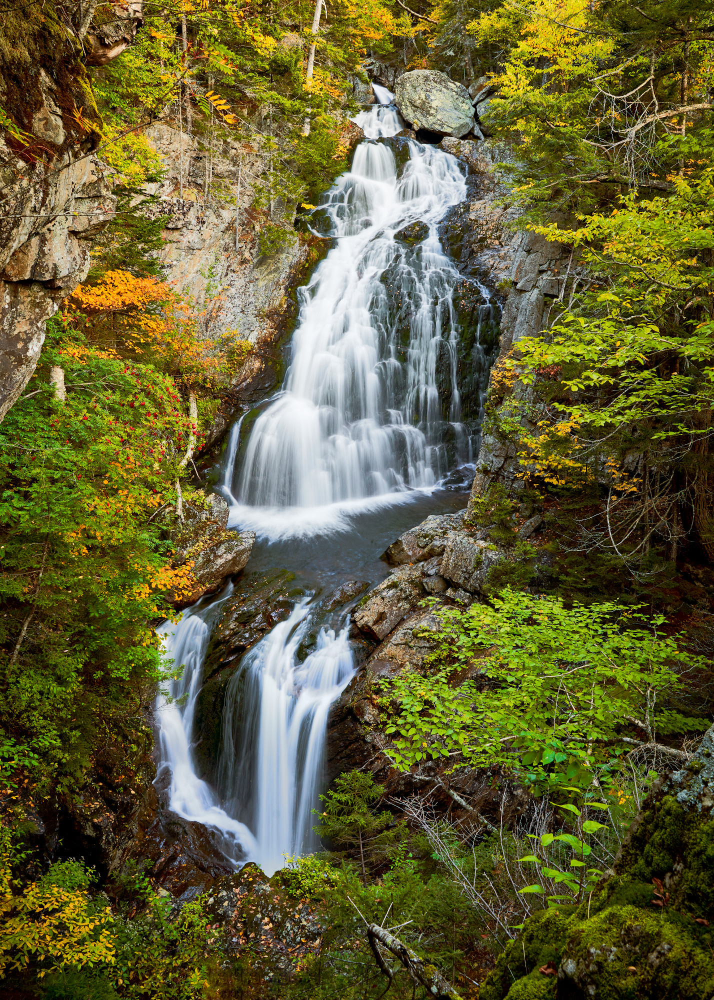
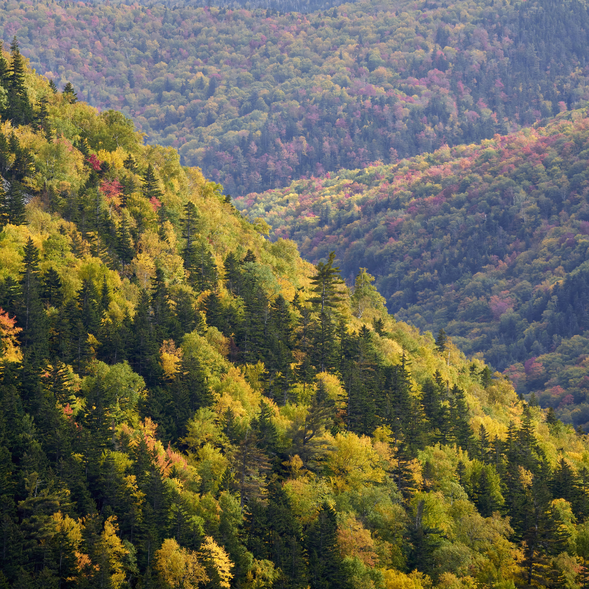
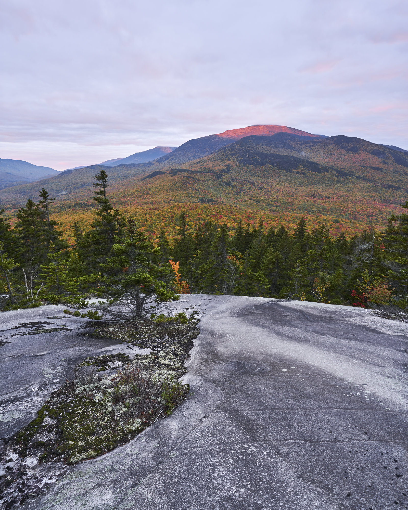
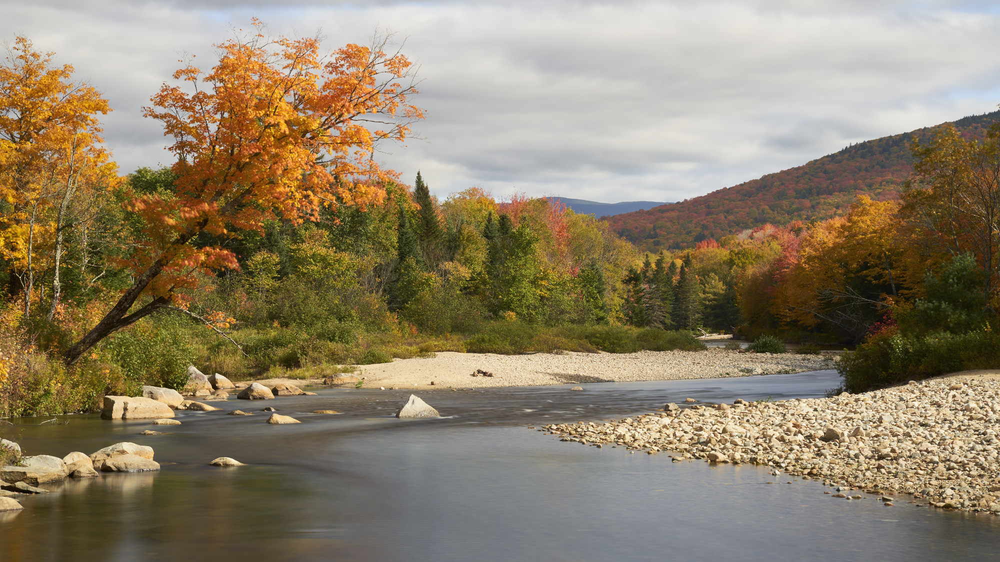
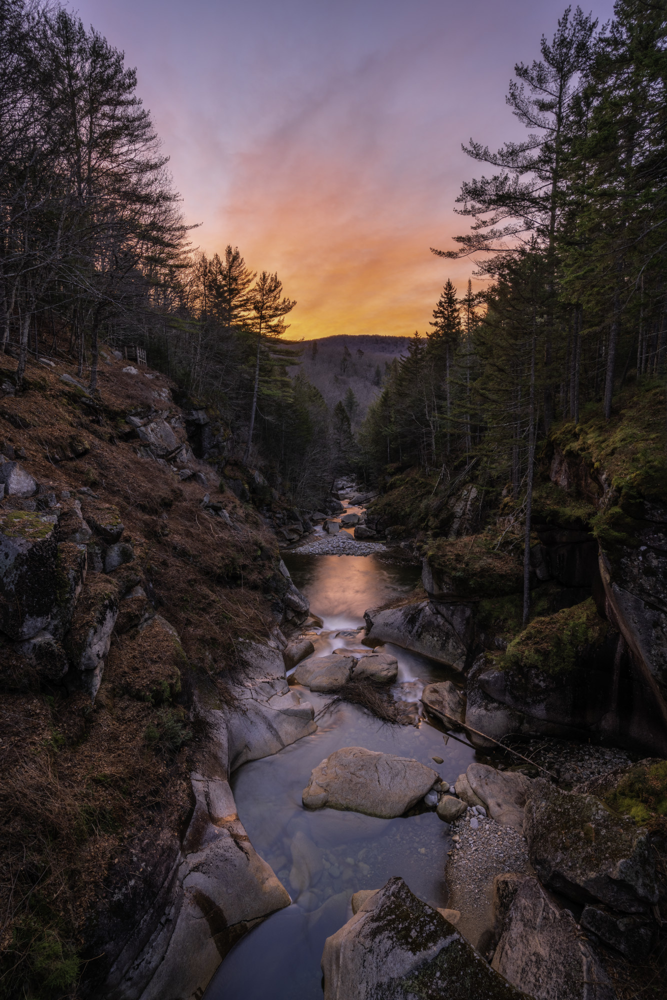

Sony α7R III / FE 70-300mm F4.5-5.6 G OSS / 203mm / 1/50s / f/11 / ISO 100
Sony α7R III / FE 70-300mm F4.5-5.6 G OSS / 248mm / 1/40s / f/11 / ISO 100
Sony α7R III / FE 70-300mm F4.5-5.6 G OSS / 248mm / 13s / f/11 / ISO 100

Sony α7R III / FE 16-35mm F4 ZA OSS / 16mm / 1/5s / f/11 / ISO 100
Sony α7R III / 100-400mm F5-6.3 DG DN OS | Contemporary 020 / 231mm / 1/250s / f/11 / ISO 100

Sony α7R III / Tamron 28-75mm F2.8 Di III RXD / 28mm / 1/25s / f/11 / ISO 100

Sony α7R III / 100-400mm F5-6.3 DG DN OS | Contemporary 020 / 400mm / 1/125s / f/13 / ISO 100
Sony α7R III / FE 70-300mm F4.5-5.6 G OSS / 228mm / 1/13s / f/11 / ISO 100

Sony α7R III / FE 70-300mm F4.5-5.6 G OSS / 93mm / 1/30s / f/11 / ISO 100
Sony α7R III / Tamron 28-75mm F2.8 Di III RXD / 28mm / 63s / f/11 / ISO 100
Sony α7R III / Tamron 28-75mm F2.8 Di III RXD / 34mm / 2s / f/13 / ISO 100

Sony α7R III / Tamron 28-75mm F2.8 Di III RXD / 53mm / 1s / f/13 / ISO 100

Sony α7R III / FE 70-300mm F4.5-5.6 G OSS / 98mm / 1/40s / f/11 / ISO 100

Sony α7R III / 100-400mm F5-6.3 DG DN OS | Contemporary 020 / 400mm / 1/4s / f/11 / ISO 100
Sony α7R III / Sony Vario-Tessar T* FE 16-35 mm F4 ZA OSS (SEL1635Z) / 16mm / 13s / f/11 / ISO 100
Sony α7R III / Tamron 28-75mm F2.8 Di III RXD / 75mm / 15s / f/11 / ISO 100
Sony α7R III / FE 16-35mm F4 ZA OSS / 16mm / 1/2s / f/11 / ISO 100